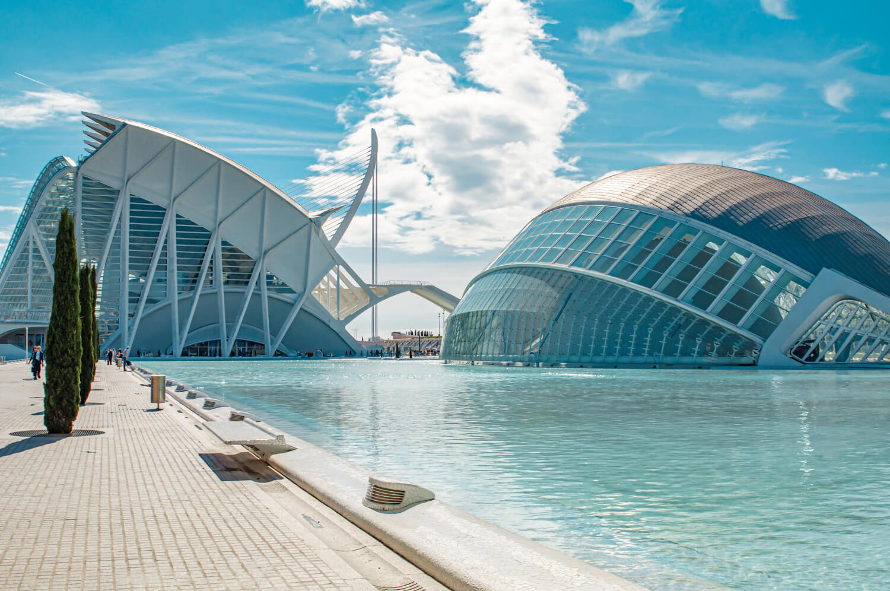
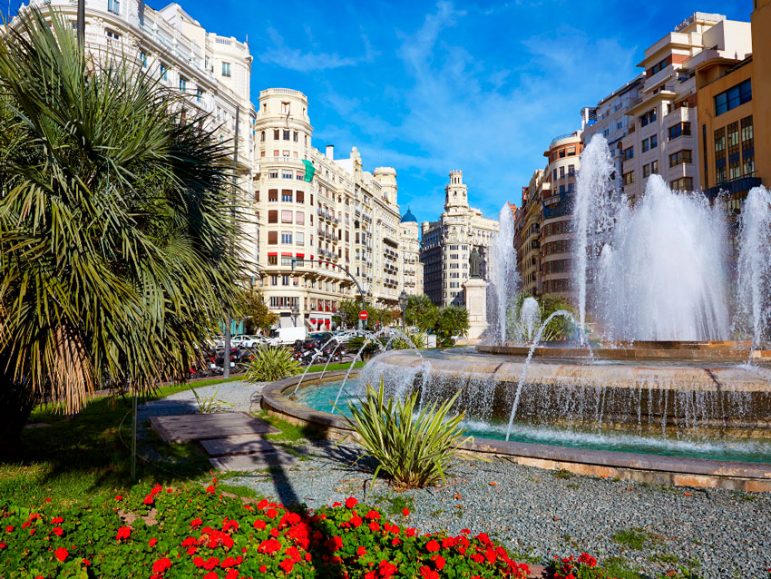
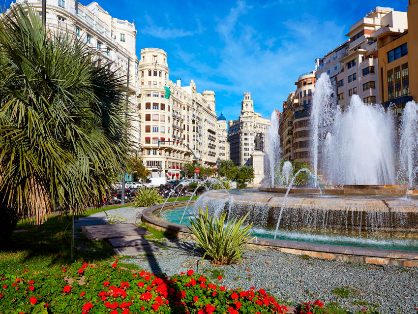

Ciudad de las Artes
Ciudad de las Artes y las Ciencias.
Ubicación: Ciudad de las Artes


 

Ciudad de las Artes y las Ciencias.
Ubicación: Ciudad de las Artes
El Mercado de Colón. La joya mas impresionante del modernismo valenciano
Ubicación: Mercado de ColónPuerta de los Apóstoles de la Catedral de Valencia.
Ubicación: Catedral de ValenciaPlaza de la Virgen.
Ubicación: Plaza de la Virgen